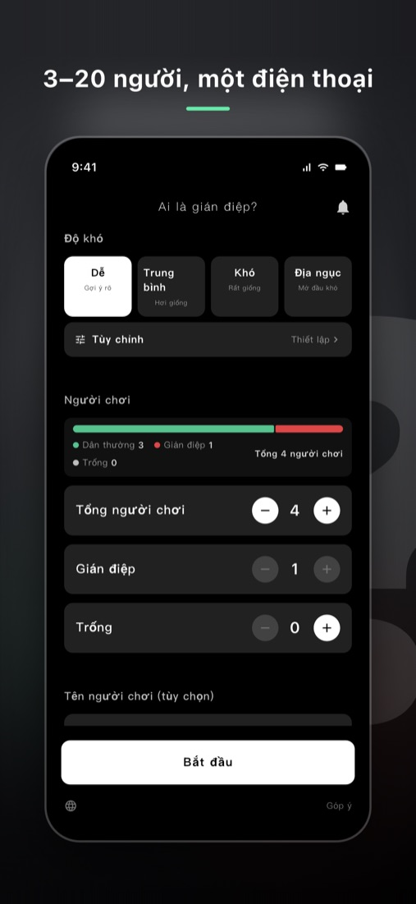
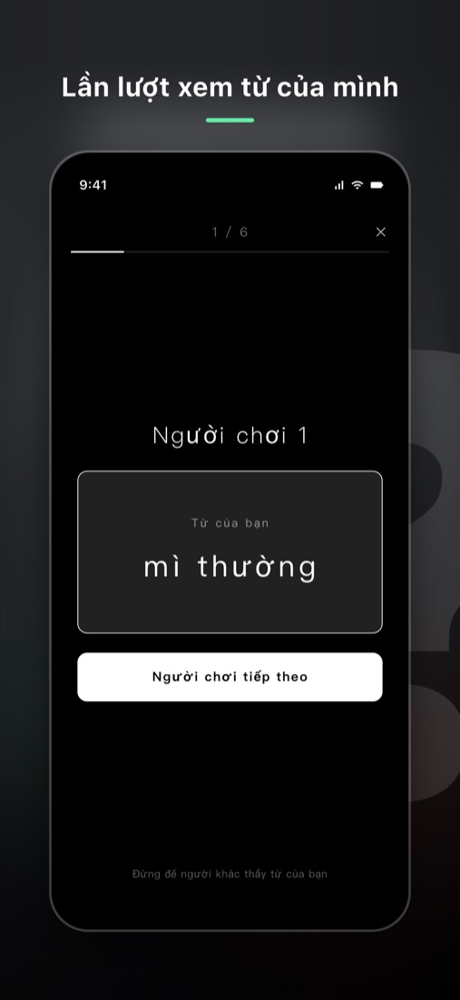
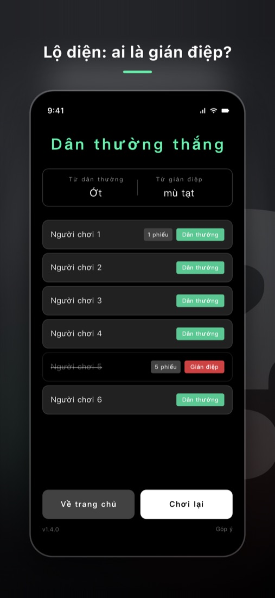

Ai là gián điệp?
Game tiệc chơi trên một điện thoại
Mọi người nhận từ gần giống nhau, chỉ gián điệp nhận từ khác. Lần lượt mô tả bằng một câu rồi bỏ phiếu tìm ra gián điệp — 3 đến 20 người, không cần mạng, tụ họp bạn bè, team building hay phá băng đều chơi được ngay.
Tải trên App Store


Ai là gián điệp chơi thế nào
Mỗi người nhận một từ. Một vài người nhận từ gần giống nhưng khác với số còn lại. Người nhận cùng từ là "dân thường", người nhận từ khác là "gián điệp". Mọi người lần lượt mô tả từ của mình và dựa vào lời mô tả của nhau để tìm ra gián điệp.
- Chọn tổng số người, số gián điệp và số Trống, rồi bấm “Bắt đầu”.
- Chuyền điện thoại cho từng người, chạm để xem từ của mình, xem xong thì ẩn đi rồi đưa cho người tiếp theo.
- Theo thứ tự phát biểu, mỗi người mô tả từ của mình bằng một câu, nhưng không được nói thẳng từ đó.
- Sau mỗi vòng mô tả, cả nhóm bỏ phiếu loại người đáng nghi nhất.
- Lặp lại mô tả và bỏ phiếu cho đến khi một bên thắng.
Ví dụ dân thường nhận "Hải cẩu", gián điệp nhận "Sư tử biển": nói "sống ở biển" thì cả hai đều đúng, nhưng nói chi tiết hơn là có thể lộ.
Ba vai
- Dân thường: mọi người nhận cùng một từ, phải tìm ra gián điệp qua lời mô tả.
- Gián điệp: nhận một từ gần giống nhưng khác, phải giấu thân phận và trụ đến cuối. Lúc đầu gián điệp không biết mình là gián điệp, phải tự nhận ra qua lời người khác.
- Trống: không nhận được từ nào, phải nghe người khác mô tả để đoán từ và trà trộn. Trống cùng phe dân thường; ở chế độ quản trò bỏ phiếu, khi bị loại có thể đoán từ của dân thường một lần, đoán đúng thì thắng một mình.
Thắng thua
- Tất cả gián điệp bị loại: dân thường thắng.
- Số gián điệp còn sống lớn hơn hoặc bằng số dân thường cộng Trống: gián điệp thắng.
Bao nhiêu người chơi? Nên có mấy gián điệp
App hỗ trợ 3 đến 20 người. Số gián điệp phải ít hơn một nửa tổng số người, Trống tối đa 2 người. Lần đầu chơi có thể chia như sau:
| Số người | Gián điệp | Trống |
|---|---|---|
| 3–5 người | 1 | 0 |
| 6–8 người | 1–2 | 0–1 |
| 9–12 người | 2–3 | 1 |
| 13–20 người | 3–5 | 1–2 |
Càng nhiều gián điệp và hai từ càng giống nhau thì dân thường càng khó thắng. Muốn cân bằng, hãy chỉnh độ khó trước rồi mới chỉnh số gián điệp.
Độ khó và ví dụ cặp từ
Có sẵn 2.034 cặp từ, chia bốn mức độ khó; bạn cũng có thể tự ra đề:
| Độ khó | Khác biệt giữa hai từ | Ví dụ |
|---|---|---|
| Dễ | Khác biệt rõ | Sấm / Sét, Chợ đêm / Hội chợ |
| Trung bình | Có phần trùng nhau | Phong bì / Bưu thiếp, Báo / Tạp chí |
| Khó | Hai từ rất gần nhau | Kẹo cao su / Kẹo dẻo, Thẻ xe buýt / Thẻ tín dụng |
| Địa ngục | Hai vòng đầu gần như không phân biệt được | Phong bì / Bao lì xì, Shipper / Chuyển phát nhanh |
Chuyện riêng của nhóm bạn, tên người hay đồ vật ở công ty, lớp học… có thể thêm vào độ khó “Tùy chỉnh”; khi chọn bộ này, ván chơi chỉ lấy từ bạn tự tạo.
Hai cách bỏ phiếu
Quản trò bỏ phiếu
Cả nhóm thảo luận hoặc giơ tay biểu quyết, người cầm điện thoại chọn người bị loại. Nhịp nhanh, hợp khi ngồi cùng nhau. Trống bị loại có thể đoán từ.
Lần lượt bỏ phiếu kín
Điện thoại được chuyền cho từng người còn sống để bỏ phiếu kín, ai nhiều phiếu nhất bị loại. Nếu hòa, những người còn lại bỏ phiếu lại giữa các người hòa; vẫn hòa thì loại ngẫu nhiên một người.
Hợp với dịp nào
Tụ họp bạn bè, bữa cơm gia đình, Tết, tiệc cuối năm công ty, team building, sinh hoạt lớp, cắm trại. Không cần đạo cụ, không cần ai cũng cài app — chỉ cần chuyền một điện thoại; không cần mạng nên ở đâu cũng chơi được.
Chi phí
Tải về không mất phí, mỗi mức độ khó chơi trước được 30 cặp từ, bộ từ tùy chỉnh dùng không cần mua. Bản đầy đủ là mua một lần, mở khóa toàn bộ cặp từ và bỏ quảng cáo; đổi điện thoại thì bấm “Khôi phục mua hàng” trong app để lấy lại.
Hỏi đáp
Khi mô tả có luật gì?
Không được nói thẳng từ đó. Cũng nên tránh nói một phần của từ hoặc dịch thẳng sang tiếng nước ngoài, vì quá dễ bị đoán ra.
Trống bị loại thì sao?
Ở chế độ quản trò bỏ phiếu, Trống bị loại có thể gõ đoán từ của dân thường một lần: đoán đúng thì Trống thắng một mình, cả dân thường và gián điệp đều thua; đoán sai thì bị loại, ván chơi tiếp tục và màn hình không lộ đáp án. Ở chế độ bỏ phiếu kín không có đoán từ.
Ai là gián điệp có giống Undercover hay Imposter không?
Đúng vậy, đây là cùng một kiểu trò chơi. Ai là gián điệp bắt nguồn từ trò chơi tiệc 誰是臥底 của Trung Quốc; tiếng Anh thường gọi là Undercover hoặc word imposter game, còn ở Nhật gọi là Word Wolf (ワードウルフ). Điểm chung là một vài người nhận từ gần giống nhưng khác, và lúc đầu gián điệp cũng không biết mình là gián điệp. Khác với Ma sói, trò này không cần quản trò ban đêm, chỉ cần một điện thoại là chơi được.
Mọi người có cần cài app không?
Không. Chỉ cần một điện thoại, chuyền cho từng người xem từ của mình.
Có bản Android không?
Bản Android đang được chuẩn bị, khi lên Google Play sẽ có đường dẫn ở đây.
Sẵn sàng tìm gián điệp chưa?
Chuyền một chiếc điện thoại và bắt đầu ván mới.
Tải trên App Store